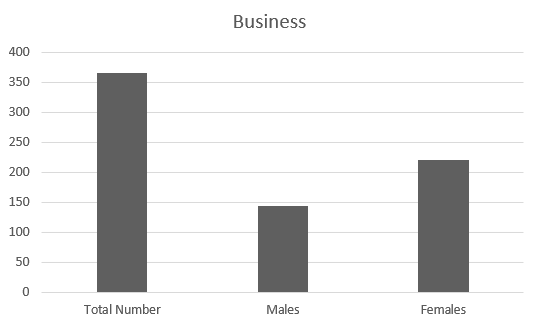

This course covers all the basics of business: management, marketing, human resources, and finance. You'll learn how companies operate and how to manage projects effectively. With skills like critical thinking, time management, and entrepreneurship, you'll be set to either enter the business world or even start your own venture
Enrollment and Distribution Statistics

- Enrolled Students
The chart illustrates the enrollment statistics for the Business specialty. A total of 365 students are enrolled, consisting of 144 males and 221 females. This distribution indicates a notable interest in business studies, particularly among female students, who represent a larger proportion of the enrollment
The team collected this data from BTEC EMIS-vocational Dept, and it pertains only to Zarqa Governorate